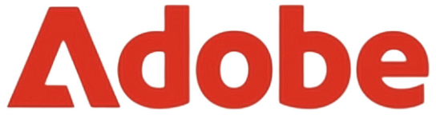
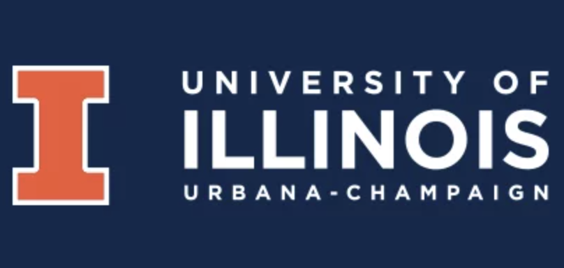
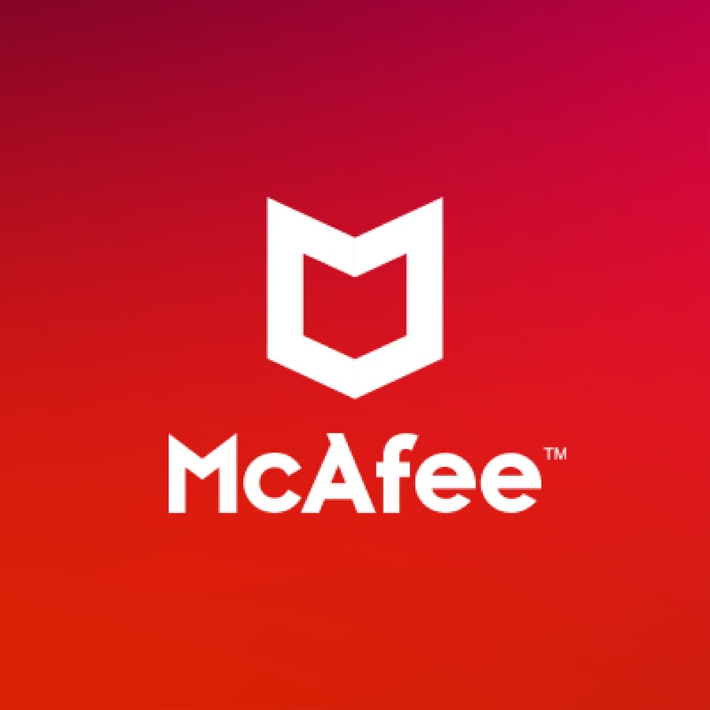
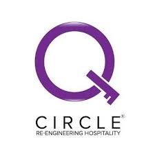

Hi, I’m Aditi! I am a Ph.D. student in Computer Science at the University of Illinois Urbana-Champaign, advised by Prof. Heng Ji in the BLENDER Lab. I work closely with Prof. Klara Nahrstedt, Prof. Derek Hoiem, and Prof. David Forsyth.
My goal is to build multimodal AI systems that understand the physical world and reason creatively within it. I study how models perceive objects and scenes under severe transformations, remember relevant evidence across time, and reason about what could happen next. I am especially interested in physically grounded and creative intelligence that remains useful in real-world settings, including disaster response and other dynamic, high-stakes environments.
Before my Ph.D., I earned an M.S. in Computer Science at UIUC, advised by Prof. Klara Nahrstedt and supported by the National Science Foundation. My work spans video understanding, world models, causal interventions, and multimodal reasoning, with research experience across academia and industry.
I enjoy collaborating across disciplines. If you would like to discuss research or explore a new idea, please get in touch.
News
Selected research and industry experience. Hover or focus on a card for details.

Adobe Research · Research Scientist Intern
May 2026–Present · San Jose, CA
- Developed a causal audit of episodic memory in video and world models using read-time memory replacement and corruption interventions.
- Tested whether improvements depend on the correct retrieved episode rather than generic feature support.
Adobe Research · Research Collaborator, CausalSliders
Sep 2025–Jan 2026 · Remote
- Developed graph-guided LoRA interventions for causally consistent image editing.
- Built training and composition pipelines with intervention, minimality and conditional-independence objectives.
HERE Technologies · Research Collaborator, GeoDynamics
Nov 2025–Present · Remote
- Developing a multimodal world model aligning satellite imagery and GPS trajectories for geospatial understanding.
Adobe Research · Research Scientist Intern
May–Aug 2025 · San Jose, CA
- Built an MCP server connecting LLM agents with internal models and tools.
- Studied 91+ vision-focused MCP servers, identifying protocol and security gaps.
Adobe Research · Research Collaborator, MAGNET
Dec 2024–Feb 2025 · Remote
- Co-developed a hybrid-attention training framework for decoder-only LLM representation learning and text infilling.

UIUC · Research Collaborator, Multiview Vision
2025–2026 · Urbana, IL
- Research on multiview scene understanding and geometric-semantic consistency with collaborators at UIUC.
Rivian Automotive · Computer Vision Research Intern
May–Aug 2024 · Palo Alto, CA
- Built a C/C++ image signal processing pipeline for raw-sensor conversion, demosaicing and image enhancement.
Coordinated Science Laboratory, UIUC · Research Assistant
Sep 2022–May 2024 · Urbana, IL
- Developed ACT360, a low-latency action-detection framework for 360-degree firefighter training videos.
- Curated a 360-degree action dataset and optimized inference for deployment.
IIT Delhi · Machine Learning Research Intern
May–Sep 2021 · Delhi, India
- Developed UAV object detection and autonomous route adaptation.

McAfee · Software Engineer Intern
Aug–Dec 2021 · Bangalore, India
- Automated HAR processing and SQL extraction with Python and Bash, reducing processing time by 58%.
MEDSupervision · Full Stack Developer Intern
Nov 2020–May 2021 · Delhi, India
- Developed Twilio video calling and optimized the patient portal and database.

QikCircle · Software Development Engineer Intern
Feb–May 2020 · Delhi, India
- Built full-stack web features using JavaScript, Flask and SQL.